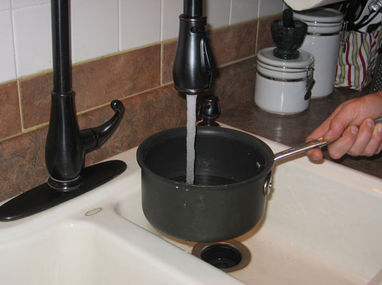
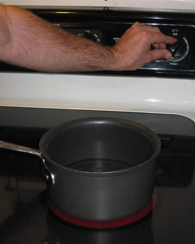
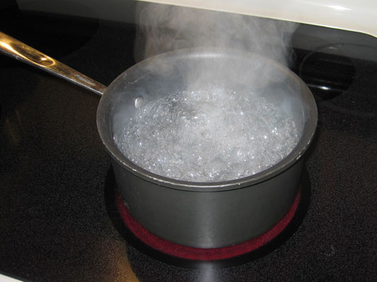

How to Boil Water
Blurb
Boiling means bringing water to 212 degrees Fahrenheit for cooking. But you don’t need a thermometer to boil water. The process to boil water (or any other kind of liquid) is simple, and you need to follow only a few steps.
Source
Transcribed from dummies.com
Ingredients
- Vegetables
- None
- Spices
- None
- Proteins
- None
- Liquids
- 2 cups water
- Garnish
- None
Steps
- Put some water in a pan or pot.
- Don’t fill it to the top, or the water will splash out of the pan when it boils!
- 
- Place the pan on your stovetop and turn the burner to the highest setting.
- Your stovetop probably has a “Hi” or “Max” setting.
- 
- Let the water come to a full rolling boil (when the bubbles are rapidly breaking the surface).
- Covering the pot speeds the process by trapping surface heat.
- 